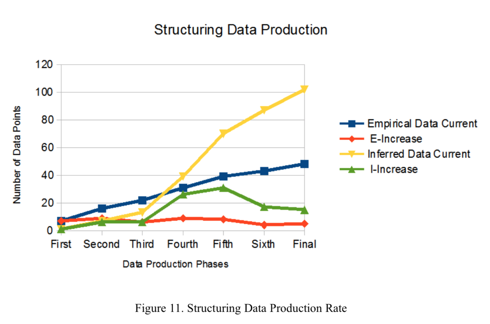
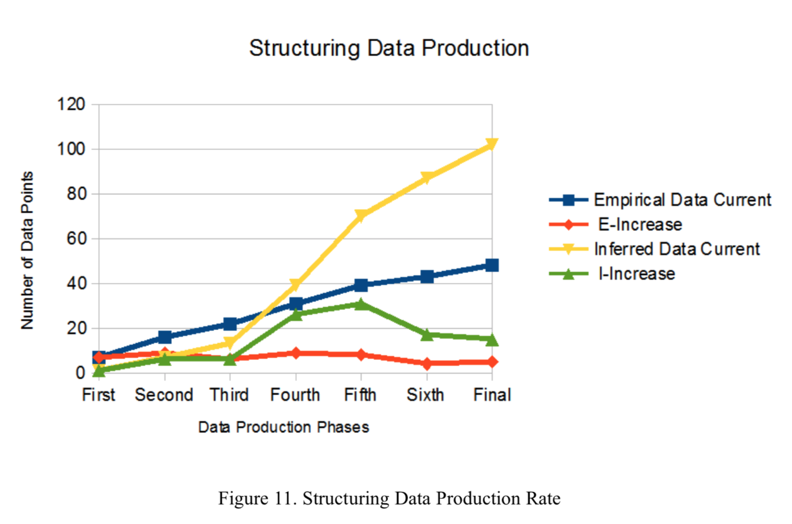
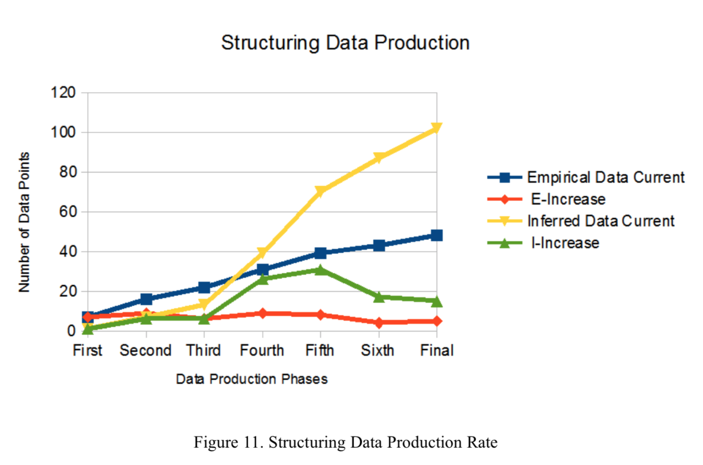
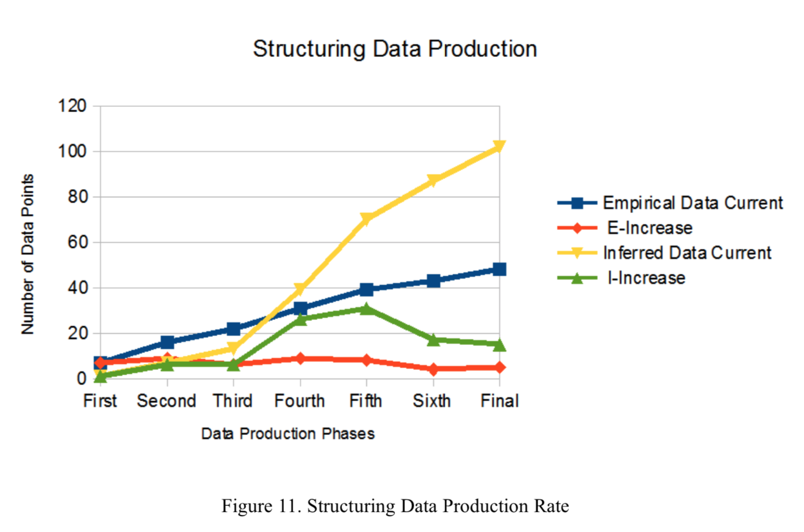

Click this link to view complete document: ==>Link_To_Paper_1
Click this link to view complete document: ==>Link_To_Paper_2
Click this link to view complete document: ==>Link_To_Paper_3
Click this link to view complete document: ==>Link_To_Paper_4
Click this link to view complete document: ==>Link_To_Paper_5
Click this link to view complete document: ==>Link_To_Paper_6
Click this link to view complete document: ==>Link_To_Paper_7
Click this link to view complete document: ==>Link_To_Paper_8
Click this link to view complete document: ==>Link_To_Paper_9
Click this link to view complete document: ==>Link_To_Paper_10
Click this link to view complete document: ==>Link_To_Paper_11
Click this link to view complete document: ==>Link_To_Paper_12
Standard Matrix Examples - DRAFT - Version 001
Set of Disordered, Central Diagonal Initial Examples
9x9 : 16 by 16 : 25 by 25 : 36 by 36 : 49 by 49
Introduction: At the most basic level, object grouping can be divided into three types. The first type of object interface grouping focuses the interfaces along the matrix diagonal. The second type of object interface grouping focuses the interfaces in the lower triangular section of the matrix. The third type of object interface grouping focuses the interfaces in the upper triangular section of the matrix. These three basic types are the first to be addressed by the standard matrix example set.
Each standard matrix has a size N, establishing an N by N square matrix. Each standard matrix has a specific number of connections. The “percent-full” gives an indication of the matrix interface density. “Percent-full” is found by dividing the number of specific interface realations in the matrix, by the number of possible relational interface that could exixt. A matrix that is 100 percent full will not respond well to many types of analysis and evaluation. As described in the working paper, a matrix with a minimum number of interfaces (N-1) is also expected to perform poorly under many types of analysis and evaluation. The best results for automated analysis and evaluation are expected from matrices that have a percent-full rating of around 20 to 40 percent. One use being made of the set of standard matrix examples is testing of these expectations.
Assuming a matrix that has an object (or named entity) in each cell along the diagonal, the remaining matrix cells can have an entry in each row or there can be rows in the matrix with no entries. This basic difference in matrix structure (empty rows or no empty rows) also impacts matrix methods and evaluation approaches. The first set of standard examples addresses matrices with an object along the diagonal, and rows that have at least one entry in each row.
A naming convention has been developed to clearly identify each type of standard matrix. Each matrix name has the following components:
The first set of standard matrix examples will be developed for the following sizes:
The minimum interface percent-full is:
The complete set of standard matrix examples is composed of the following percent-full interface values for each matrix size:
Each size of matrix will have an example for each of the percent-full interface values. The complete set of standard examples for the described diagonal grouping is then approximately 100 matrix pairs (one base and one grouped or partitioned), for a total of 200 matrices. In a similar fashion the upper triangular will have 200 matrices and the lower triangular grouping example sets will have 200 matrices. This comprises a total of around 600 matrices for the complete basic standard matrix set with no empty rows.
When matrices with empty rows are added to the above basic standard set, the expanded standard matrix set contains 1200 matrices. If the static and time-based matrix representations are addressed, that would create a standard matrix example set of 2400 matrices.
These matrices will be developed, published and discussed in an incremental fashion to encourage the development, comparison and discussion of common, verifiable matrix clustering algorithms and methods. The smaller-sized matrices are expected to perform well at all listed percent-full values. The larger matrices may not perform well at the higher percent-full values; and smaller percent values may need to be generated.
Standard Matrix Example 9 by 9 - 20 percent :SME_CD_9_20P_NER_DO
Standard Matrix Example 9 by 9 - 25 percent :SME_CD_9_25P_NER_DO
Standard Matrix Example 9 by 9 - 30 percent :SME_CD_9_30P_NER_DO
Standard Matrix Example 9 by 9 - 35 percent :SME_CD_9_35P_NER_DO
Standard Matrix Example 9 by 9 - 40 percent :SME_CD_9_40P_NER_DO
Standard Matrix Example 9 by 9 - 45 percent :SME_CD_9_45P_NER_DO
Standard Matrix Example 16 by 16 - 20 percent :SME_CD_16_20P_NER_DO
Standard Matrix Example 16 by 16 - 25 percent :SME_CD_16_25P_NER_DO
Standard Matrix Example 16 by 16 - 30 percent :SME_CD_16_30P_NER_DO
Standard Matrix Example 16 by 16 - 35 percent :SME_CD_16_35P_NER_DO
Standard Matrix Example 16 by 16 - 40 percent :SME_CD_16_40P_NER_DO
Standard Matrix Example 16 by 16 - 45 percent :SME_CD_16_45P_NER_DO
Standard Matrix Example 25 by 25 - 20 percent :SME_CD_25_20P_NER_DO
Standard Matrix Example 25 by 25 - 25 percent :SME_CD_25_25P_NER_DO
Standard Matrix Example 25 by 25 - 30 percent :SME_CD_25_30P_NER_DO
Standard Matrix Example 25 by 25 - 35 percent :SME_CD_25_35P_NER_DO
Standard Matrix Example 25 by 25 - 40 percent :SME_CD_25_40P_NER_DO
Standard Matrix Example 25 by 25 - 45 percent :SME_CD_25_45P_NER_DO
Standard Matrix Example 36 by 36 - 20 percent :SME_CD_36_20P_NER_DO
Standard Matrix Example 36 by 36 - 25 percent :SME_CD_36_25P_NER_DO
Standard Matrix Example 36 by 36 - 30 percent :SME_CD_36_30P_NER_DO
Standard Matrix Example 36 by 36 - 35 percent :SME_CD_36_35P_NER_DO
Standard Matrix Example 36 by 36 - 40 percent :SME_CD_36_40P_NER_DO
Standard Matrix Example 36 by 36 - 45 percent :SME_CD_36_45P_NER_DO
Standard Matrix Example 49 by 49 - 20 percent :SME_CD_49_20P_NER_DO
Standard Matrix Example 49 by 49 - 25 percent :SME_CD_49_25P_NER_DO
Standard Matrix Example 49 by 49 - 30 percent :SME_CD_49_30P_NER_DO
Standard Matrix Example 49 by 49 - 35 percent :SME_CD_49_35P_NER_DO
Standard Matrix Example 49 by 49 - 40 percent :SME_CD_49_40P_NER_DO
Standard Matrix Example 49 by 49 - 45 percent :SME_CD_49_45P_NER_DO
Hosted with GitHub Pages.